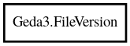

Geda3.FileVersion – Gschem3 Reference Manual
Packages
Gschem3
Geda3
FileVersion
LATEST
VERSION_TOKEN
read
write
file_version
tool_version
FileVersion
Object Hierarchy:

Description:
public
struct
FileVersion
Functions for operating on coordinates
Namespace:
Geda3
Package:
Gschem3
Content:
Constants:
public
const
FileVersion
LATEST
The latest file format produced by the gEDA suite
public
const
unowned
string
VERSION_TOKEN
The token that starts the version line in the file format
Static methods:
public
static
FileVersion
read
(
DataInputStream
stream)
throws
IOError
,
ParseError
Read the file version from the input stream
Methods:
public
void
write
(
DataOutputStream
stream)
throws
IOError
Write the file version to the output stream
Fields:
public
string
tool_version
public
string
file_version